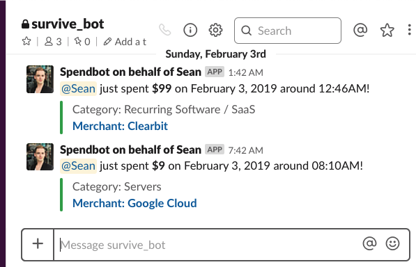
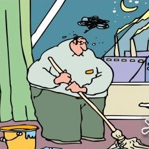
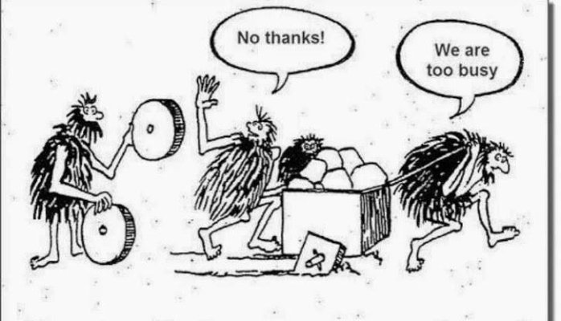

Yuki Li: @yukims19
Sean Grove @sgrove
Work on onegraphio
Where X could be: #{ReasonML, Elm, Haskell, Clojure, Scheme}
This is one such story
Meet our protagonist, Yuki.
Our hero's first serious project

Ship to a customer
… the customer pays us!
…
Long story short:
(in a badass voice)
In JavaScript, there is no safety except the safety we guarantee ourselves
But then…
I shipped bugs to production.
Customers saw buggy behavior.
Senior developers had to debug in production.
My life is over. Hopes and dreams, crushed.
[Yuki edit about "Goals were wrong"]
[Revisit Junior developer needs with new goals and experience from previous steps]
We have to make Spendbot "production ready."
Enter, ReasonML
[reason logo]
The pitch: You need training wheels.
"But I will feel more comfortable with you working in Reason" - Sean Grove
And, in time, you will become a master.
Complete rewrite in Reason, shipping to production in one week.
I'm a junior developer, so I don't know what's reasonable, and what's… unreasonable.
Step 1: Install the Reason toolchain.
I would not have persisted through this on my own. Only the constant threats to my family's well-being kept me going forward.
Not feeling like a master yet, but it's just a one-time setup. Now, my training begins.
First thing's first in Reason: Start typing your types.
Still not shipping product. Feeling even less like a master. Maybe tomorrow will be better?
"Reason works with JavaScript libraries!"
Fine, fine. I'll learn!
Even though My deadline is in a week.
Just have to keep pushing.
Js.* go?!opam switches
graphql_ppx onthe serveR?!?😱😱😱😱😱😱😱😱😱😱😱😱😱😱😱😱😱😱😱😱😱😱😱😱😱😱😱😱😱😱😱😱😱😱😱😱😱😱😱😱😱😱😱😱😱😱😱😱😱😱😱😱😱😱😱😱😱😱😱😱😱😱😱
No longer even want to feel like a master. Completely overwhelmed.
Don't even know how to phrase the questions I need to get answers.
Less…
…more 

I've come to appreciate the power of Reason more and more:
> Would Yu-killa build a new product with Reason today without any outside pressure?